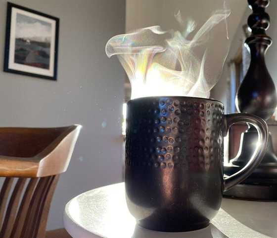
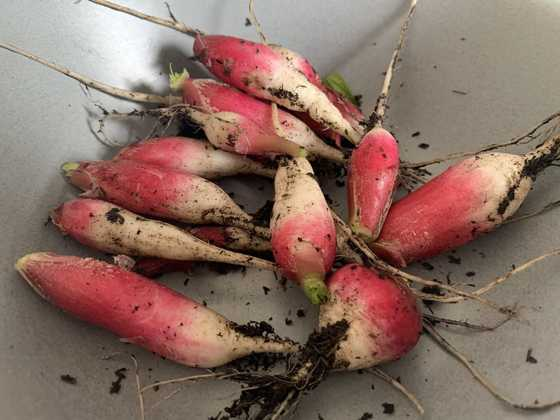
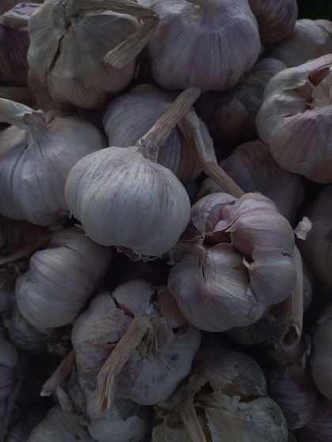
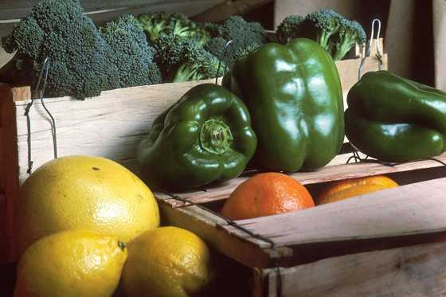
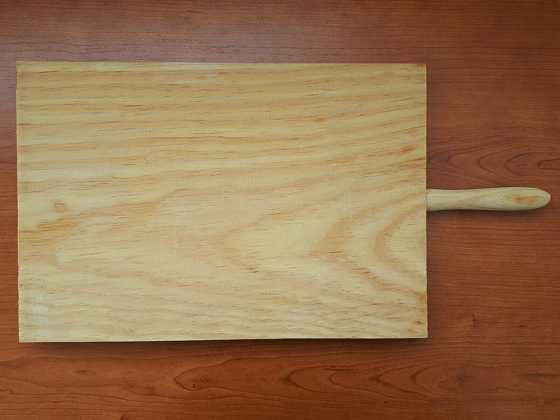
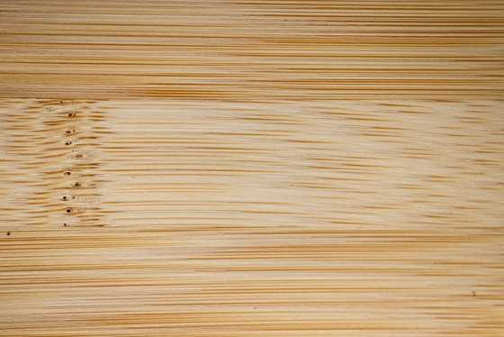
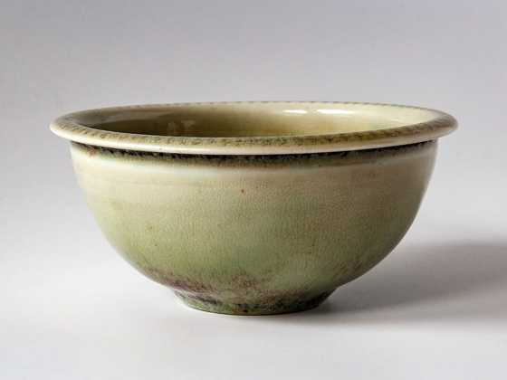
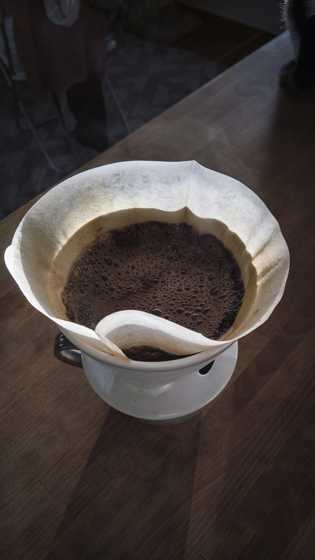
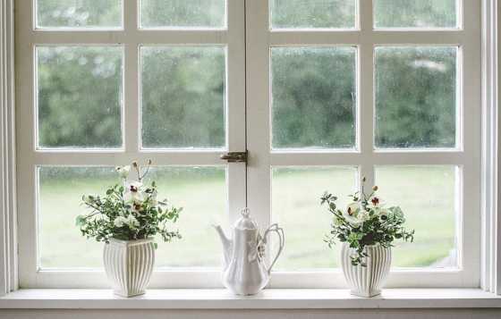
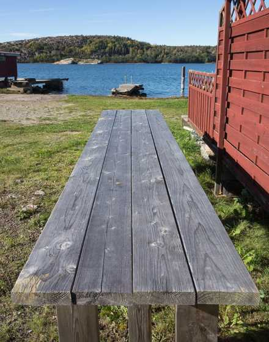

山口県岩国市・岩国駅西口 せいろ蒸しカフェ
そろっと
蒸気のやわらかさで、旬の野菜の味をそっと引き出す。10席の小さなせいろ蒸しカフェ。
ABOUT
やさしく蒸し上げる、体にやさしいごはん。
「そろっと」は、岩国駅西口から歩いて約3分、麻里布町にある蒸籠(せいろ)蒸しのお店です。地元の農家さんから仕入れた旬の食材を、素材本来の味を生かしてやさしく蒸し上げ、体にやさしい食事を届けるスタイルとされています。
- オープン 2025年11月(食べログ・Instagramの記載)
- 席数 10席の小さな店内
- 朝から 8:00から蒸籠蒸しのモーニングを用意
- 運営 女性オーナーがお一人で営業されることが多く、混み合うとお待たせすることがあるとのご案内です
- 夜 Instagramのプロフィールに「せいろ蒸しカフェ&週末限定バー」とあります
情報源: 岩国市 新規開業の店舗紹介/食べログ/Instagram
店名の由来・オーナーの想いの詳細は確認できていません。ページ内の「そっと」「ゆっくり」といった言い回しは、制作側のイメージです。




写真はフリー素材のイメージで、店舗の実際の様子・提供内容ではありません。実際の写真はご提供いただいたものに差し替えます。
MENU
せいろで蒸した、旬のごはん。
掲載情報では、地元農家の旬の食材を使った蒸籠蒸しの料理と、8:00からのモーニング、カフェ利用が案内されています。具体的な品目・内容は季節で変わるため、最新はInstagramをご確認ください。
蒸籠蒸しモーニング
8:00から。
内容・価格は準備中
旬の蒸籠蒸し
地元農家の食材を蒸し上げます。
内容・価格は準備中
カフェ・週末バー
カフェ利用、週末限定のバーとあります。
内容・価格は準備中






写真はフリー素材のイメージで、店舗の実際の商品ではありません。
VOICE
こんな声が聞こえてきそうです。
以下は制作側が作成した「イメージ例」で、実際のお客様の声ではありません。
朝いちばんに蒸したてのお野菜をいただくと、体がふわっと目覚める気がします。小さなお店で落ち着きました。
素材の味がそのままで、やさしい食事でした。ひとりで切り盛りされているので、ゆっくり待つ時間も楽しめました。
駅から歩いてすぐ。電車の前に立ち寄れる距離で、温かいせいろごはんにほっとしました。
ACCESS
岩国駅西口から、歩いて約3分。
〒740-0018 山口県岩国市麻里布町3丁目1-6
電話: 準備中
営業時間: 掲載情報では8:00〜17:00、定休日は不定休とされています(最新情報はInstagramでご確認ください)
価格・予約・駐車場: 準備中



写真はフリー素材のイメージで、店舗周辺や店内の実際の様子ではありません。
写真クレジット
- steam.jpg「Coffee steaming in a mug」PedanticNarrativeController / CC0 1.0 / 米国
- carrots.jpg「Fresh Carrots」Yerson Retamel / CC0 1.0 / 撮影地不明
- radish.jpg「Confinement 2020 - modeste première récolte de radis」Benoît Prieur / CC0 1.0 / フランス
- garlic.jpg「"Garlic" picture」Kuwanishbek / CC0 1.0 / ウズベキスタン
- board.jpg「Wooden cutting board 2017」Fructibus / CC0 1.0 / 撮影地不明
- sencha.jpg「2018 Uji lightly steamed sencha - first infusion」Difference engine / CC BY-SA 4.0 / 京都府
- greenbowl.jpg「Light green ceramic bowl 1」W.carter / CC BY-SA 4.0 / スウェーデン
- wood.jpg「Weatherworn top of wooden table」W.carter / CC0 1.0 / スウェーデン
- longtable.jpg「Long wooden table at Loddebo」W.carter / CC0 1.0 / スウェーデン
- farmland.jpg「Beautiful farmland landscape in Bangalore」Satheesh Sankaran / CC BY-SA 4.0 / インド
- crate.jpg「Crate of fruit and vegetables」Unknown photographer / パブリックドメイン / 撮影地不明
- bamboo.jpg「Wood Texture Background」Bango Textures / CC0 1.0 / 撮影地不明
- teapot.jpg「Porcelain teapot on windowsill (Unsplash)」Nathan Fertig / CC0 1.0 / 米国オハイオ州
- dew.jpg「Dew on agave leaf」Hallo3800 / CC0 1.0 / オーストラリア
- drip.jpg「Slow drip coffee」Alanthebox / CC0 1.0 / 撮影地不明
いずれも出典はWikimedia Commons。縮小等の加工あり。